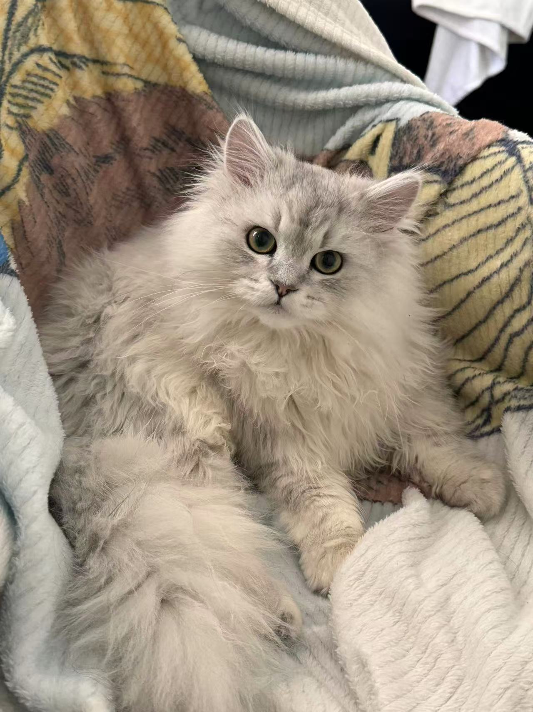
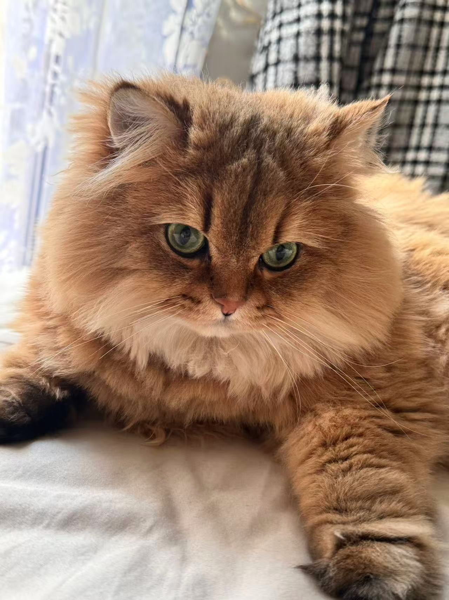

2025 - 2026
University of Toronto
Master of Mathematical Finance
Profile 个人背景
2025 - 2026
Master of Mathematical Finance
2023 - 2024
Master of Arts in Economics
2019 - 2023
Bachelor of Arts in Economics and Mathematics
Jan 2026 - Apr 2026
Operational Risk Co-op
Apr 2025 - Aug 2025
Banking Technology Consulting Intern
Jul 2022 - Aug 2022
Risk Analyst Intern
Jul 2021 - Aug 2021
Credit Risk Analyst Intern
Cat Lover爱猫人士
I am a cat lover, and I have two cats: a Chinchilla Persian and a long-haired golden shaded cat. They are a big part of my daily life. I like the quiet moments with them, from studying nearby to watching them take over the room. 我是爱猫人士，有两只猫：一只金吉拉和一只长毛金渐层。它们是我日常生活里很重要的一部分，也让家里的氛围更温暖、更柔软。


City Explorer城市探索
Of the cities I have visited, Toronto and Montreal are the two I like most. Toronto feels close to my current life: fast, practical, and full of opportunities. Montreal is different in a good way, with more art, history, street life, and a slower rhythm that makes the city memorable. 在去过的城市里，我最喜欢 Toronto 和 Montreal。Toronto 更贴近我现在的生活，节奏快、务实，也充满机会；Montreal 则是另一种吸引力，有更多艺术感、历史感、街区生活，以及让人印象深刻的慢节奏。
Basketball Fan篮球球迷
I am a basketball fan, and the Toronto Raptors are my team. I like the pace, teamwork, momentum shifts, and how one good play can change the whole atmosphere. 我是篮球迷，也支持多伦多猛龙队。我喜欢比赛里的节奏、团队配合、气势变化，以及一个好球瞬间点燃全场的感觉。
Sci-Fi Reader科幻读者
I am drawn to science fiction because it asks big questions through imagined worlds. My favorite book is The Three-Body Problem by Liu Cixin, especially its questions about uncertainty, survival, and human choice. 我喜欢科幻，因为它会用想象中的世界提出很大的问题。我最喜欢刘慈欣的《三体》，尤其是其中关于不确定性、生存和人类选择的思考。